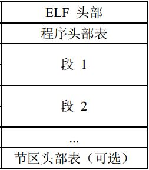

1 总述
bootloader的程序存放在硬盘的第一个扇区（512B）。BIOS程序会将bootloader加载到内存0x7c00处，并跳转到这里执行。
bootloader的主要作用：
- 打开A20地址线，使CPU进入32位实模式；
- 探测物理内存大小；
- 设置CR0，进入32位保护模式；
- 加载内核镜像，把控制权交给内核。
2 准备
进入bootloader后，为了后向兼容，此时的CPU是16位模式（20根地址线，16位地址模式），20-31的地址线为0。此时的汇编代码应该有“.code16”前缀，表示16位模式。
在bootloader执行过程中，必须关闭中断，将数据段、附加段、堆栈段的段寄存器设置为0。
|
|
3 打开A20
3.1 背景
为了兼容16位地址模式，32位CPU使用键盘控制器（8042控制器）的一个控制线（即A20控制线）来控制20-31位地址线的打开关闭。当A20控制线打开时可以使用20-31的地址线。而当A20 关闭时20-31的地址线全部为0。
3.2 8042控制器
8042控制器内部拥有4个8位寄存器：状态寄存器、输出寄存器、输入寄存器、控制寄存器，对外通过两个I/O端口：0x64（命令端口）、0x60（数据端口）进行通信。
状态寄存器各位的定义如下：
- Bit7: 从键盘获得的数据奇偶校验错误
- Bit6: 接收超时，置1
- Bit5: 发送超时，置1
- Bit4: 为1，键盘没有被禁止。为0，键盘被禁止。
- Bit3: 为1，输入缓冲器中的内容为命令，为0，输入缓冲器中的内容为数据。
- Bit2: 系统标志，加电启动置0，自检通过后置1
- Bit1: 输入缓冲器满置1，i8042 取走后置0
- BitO: 输出缓冲器满置1，CPU读取后置0
读写0x64和0x60的含义：
- 读取0x64端口时，返回状态寄存器的内容，可以判断8042控制器的忙闲状态；
- 写0x64端口时，一般写入操作命令。
- 读写0x60端口一般都跟在写0x64端口后，主要作用是读取发送操作命令后控制器的响应，或者写入操作命令需要的参数。
举个例子，如果要读取8042的控制寄存器的内容，需要发送20h命令，控制器就会把结果放在输出缓存器中等待CPU取走，接下来读取0x60端口读取内容；如果要写控制寄存器的内容，要发送60h命令，接下来将要设置的内容通过0x60端口写入。
但需要注意的是，无论是通过哪个端口（0x60、0x64）写入数据，都需要等待8042的输入缓存为空，否则就会冲掉上次的输入。判断输入缓存为空只需要判断状态寄存器的第2位是否为0（见状态寄存器的Bit1位）。
3.3 A20使能
A20控制线是8042输出端口的第2位，只要设置该输出端口为1，就可以打开A20。写输出端口的命令是0xD1。那么整个流程可以描述为：1）等待输入缓存为空；2）从0x64端口写入0xD1命令；3）等待输入缓存为空；4）从0x60端口写入要设置的数据。
|
|
4 探测物理内存分布
内核在管理内存前，需要知道物理内存的分布情况，哪些部分可以使用，哪些部分不能使用。内存分布情况可以通过BIOS中断来获取，具体就是INT 15h，参数eax为0xe820。
在调用INT 15h中断获取内存分布情况时，需要设置一些输入参数：
- 设置eax为0xE820
- es:edi指向缓存区，缓存返回的内存分布描述符（Address Range Descriptor），表示内存段的状态。
- ecx存放返回数据的大小，也就是内存分布描述符的大小，一般BIOS总是返回20字节
- edx的值为0x534d4150，也就是“SMAP”的ASCII码。
输出：
- CF为1表示出现错误，否则无错
- eax为“SMAP”的ASCII码，用于验证BIOS的返回是否正确。
- es:di：返回内存分布描述符的地址，与输入值一样
- ebx：返回获取下一描述符的后续值，作为下次中断的输入值。如果为0，则表示所有描述符获取完毕。
我们可以利用INT 15h获取到多个内存分布描述符。在ucore中，这些内存分布描述符存放在连续的内存空间中，也就是一个数组中，这个数组的起始地址为0x8004；而这个数组的长度存放在0x8000-0x8003的四字节内存中，作为整形使用。在kern/mm/memlayout.h中确实定义了等价的结构体e820map来表示这段内存：
再回到如何利用INT 15h获取e820map的汇编代码吧：
|
|
5 进入保护模式
将gdtdesc加载到gdtr。gdtdesc指向一块6字节内存，其中包含了全局描述符表（gdt）的位置和长度。
gdt和gdtdesc的内容：
接下来设置cr0的PE位（第0位）为1，开启保护模式。此时全局描述符表开始起作用，其中代码段和数据段的段基址均为0，也就是说此时的虚拟地址和线性地址是相等的。由于此时也没有开启分页模式，线性地址也就是物理地址。最后通过一条长跳转指令，进入32位代码段。
|
|
接下来设置个数据段的段选择子（代码段的段选择子在ljmp执行后自动设置好），设置堆栈空间为0-0x7C00。堆栈设置好以后就可以调用C函数了。最后调用bootmain函数，此函数的主要作用就是从硬盘读取内核并加载到内存中并执行。
6 加载内核
这部分的代码在boot/bootmain.c中，主要功能是从硬盘中读取内核（ELF文件）并加载到内存中。
6.1 磁盘操作
对磁盘的操作需要通过IDE接口实现。其中IDE主通道的IO地址为0x1F0-0x1F7，IDE次通道的IO地址为0x170-0x177。每个通道可以挂载两块硬盘。这里需要操作的是第一个通道的第一块硬盘。
对硬盘的读写有两种模式：CHS和LBA（logic block address）。CHS也就是通过柱面、磁头、扇区的方式读写硬盘，LBA就像内存一样，通过线性地址来访问磁盘。
下面介绍LBA的方式读取硬盘。
0x1F0 - 0x1F7的IO端口含义如下：
- 0x1f0: 读/写数据
- 0x1f1: 读取错误状态
- 0x1f2: 读/写的扇区数目
- 0x1f3: LBA的0-7位(相当于扇区)
- 0x1f4: LBA的8-15位（相当于柱面）
- 0x1f5: LBA的16-23位(相当于柱面)
- 0x1f6: bit7、bit5必须为1；bit6：0为CHS模式，1为LBA模式；bit4：0为主盘，1为从盘；bit3-0：LBA的27-24位。
- 0x1f7: 命令/状态寄存器。发送命令或读取状态。
状态寄存器的各位被设置的含义：
- Bit7: 控制器忙
- Bit6: 正常运转（停止转动或出错，该位清零）
- Bit5: 控制器严重错误
- Bit4: Overlapped Mode Service Request
- Bit3: 控制器发出来数据或者准备好接收数据
- Bit0: 出错
那么操作硬盘的步骤具体如下：
- 等待硬盘控制器不忙
- 写入操作硬盘的参数：模式、地址、主从盘等
- 读/写数据
6.2 读取扇区
ucore将读取扇区的操作封装在函数readsect中：
readseg函数调用了readsect函数，它的主要作用就是从内核偏移量为offset的地方读取count字节的数据，存放在起始位置为va的内存中。因为readsect是以整个扇区为单位读取，所以该函数读取的内容大于等于count。
|
|
6.3 ELF文件
ELF文件是指可执行链接格式（Executable and Linking Format），最初由UNIX 系统实验室开发并发布的，作为应用程序二进制接口的一部分，也是Linux的主要可执行文件。
ELF文件有三种类型：1) 可重定位文件，也就是通常称的目标文件，后缀为.o。2) 共享文件：也就是通常称的库文件，后缀为.so。3) 可执行文件：本文主要考虑的文件格式。
文件格式：

- ELF头部：用来描述整个文件的组织
- 程序头部表：是一个结构数组，它的大小等于ELF头表中字段e_phnum定义的条目，结构描述一个段或其他系统准备执行该程序所需要的信息。
ucore中定义的ELF头结构：
其中：
- e_magic是0x7f、’E’、’L’、’F’，常数
- e_elf[12]存放一些系统信息
- e_phoff：程序头部表在文件中的位置
- e_phnum：程序头部表中元素个数
- e_entry：可执行程序入口
紧跟着ELF头部的就是程序头部表，它是一个数组，数组项的结构定义如下：
|
|
加载内核就是根据程序头部表的内容，将所有代码段加载到对应的内存中，并从ELF头部的可执行入口执行程序。
- 首先bootloader将内核最开始4k的内容加载到内容64k的地方。这4k的内容包含了ELF头部和程序头部表的内容。
- 遍历程序头部表，根据每一项的内容，加载对应的段到内存中。
- 从ELF头部的e_entry项执行程序。
|
|
这里需要注意一点，段被加载到的物理内存对应的虚拟地址应该是ph->p_va，但这里是ph->p_va & 0xFFFFFF，这是为什么？
文件tools/kernel.ld是链接产生内核的ld脚本。从中可以看到代码段的起始虚拟地址是0xC0100000。内核实际被加载到了0xC0100000 & 0xFFFFFF = 0x100000的物理地址中，也就是内存起始1M的地方。当前代码段和数据段的段基址均为0，且没有开启分页机制，虚拟地址等于物理地址。为了让内核正常运行，需要把虚拟地址0xC0100000映射到物理地址0x100000处。所以进入内核的第一件事就是重新设置gdt，设置代码段和数据段的段基址为-0xC0000000。这部分不在bootloader中，这里不详述了。
另外，为了正确进入内核入口地址时，也需要和0xFFFFFF相与：ELFHDR->e_entry & 0xFFFFFF = ELFHDR->e_entry - 0xC0000000，这是内核入口的真正物理地址。
7 参考
- http://wiki.osdev.org/%228042%22\_PS/2\_Controller “”8042” PS/2 Controller”
- http://www.uruk.org/orig-grub/mem64mb.html “Query System Address Map”
- http://wiki.osdev.org/ATA\_PIO\_Mode “ATA PIO Mode”
- 滕启明 “ELF文件格式分析”
- http://www.ibm.com/developerworks/cn/linux/l-excutff/ “UNIX/LINUX 平台可执行文件格式分析”